Le R-201 Carbine a été fabriqué par Lastimosa Armory entre la bataille de Deméter et l'opération Broadsword pour succéder au R-101C Carbine. Bien que le R-101C soit encore utilisé par les combattants à cette époque, le nouveau R-201 est devenu le fusil favori de la Frontière et est rapidement devenu une arme standard au sein de l'Interstellar Manufacturing Corporation et de la Milice de la Frontière pendant la Guerre de la Frontière.
Armes Principales
Fusils d'assaut
R-201
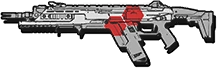
R-101C
Le R-101C Carbine a été fabriqué par Lastimosa Armory. Il a remplacé l'ancien fusil de combat G2A4 dans les mains de l'IMC, devenant rapidement le fusil standard utilisé dans toute la Frontière. Ce fusil a fini par donner naissance à trois systèmes d'armes similaires basés sur son design : le fusil d'assaut R-201, le fusil de précision D-101 Longbow, et le SMG compact R-97.
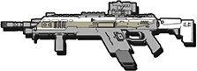
Hemlok BF-R
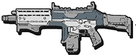
Le Hemlok BF-R est un fusil d'assaut lourd à tir en rafale utilisé aussi bien par les forces de l'IMC que par la Milice sur la Frontière. Bien qu'il soit moins courant que les fusils standards R-101C Carbine et R-201, le Hemlok reste relativement fréquent entre les mains des Pilotes, des Grunts et des Spectres. Son processeur intégré peut tirer des rafales contrôlées de deux, trois, cinq coups, ou vider un chargeur entier en une seule pression sur la détente.
G2A5
Le G2A5 apparaît après la bataille de Deméter en tant que successeur du G2A4. Comme la version précédente était populaire auprès des pilotes qui voulaient plus de polyvalence aux distances entre celles des fusils d'assaut et des fusils de précision, un nouveau modèle a été créé. Les modifications apportées à l'arme sont mineures, avec des améliorations de sa hausse arrière et de son ergonomie.
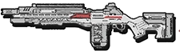
V-47 Flatline
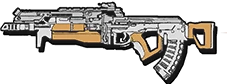
Il possède une structure repliable similaire à celle du R-101C Carbine et du R-201, probablement pour faciliter son transport à l'intérieur des Titans et autres véhicules. Ce fusil est couramment utilisé par les Grunts de la Milice, notamment ceux du 41e bataillon de fusiliers de la Milice, en tant qu'arme standard. Cependant, on le retrouve également entre les mains des Marines de l'IMC. Au lieu d'un recul classique de haut en bas, il recule latéralement.
Mitraillette
Car
Le C.A.R. SMG est l'une des deux mitraillettes développées à partir de la plateforme du R-101C Carbine. Contrairement au R-97, il est bien plus puissant et peut tuer en un coup de moins à toutes les distances. Cela se fait toutefois au prix de la cadence de tir, de la portée et de la capacité. Cela en fait une arme hybride entre le R-101C Carbine et le R-97 Compact SMG, infligeant des dégâts similaires au premier, avec une cadence de tir plus lente que le second.
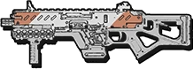
Alternateur
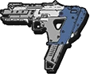
Le pistolet-mitrailleur Alternateur, parfois appelé de manière non officielle SP-14 Hatchet dans les concept arts, est une mitraillette à double canon. L'Alternateur a été créé par Emslie Tactical, qui en a fait sa première mitraillette et la seule arme connue de cette entreprise. Bien que ce fût la première mitraillette conçue par Emslie, elle était révolutionnaire pour son époque, étant la première mitraillette à utiliser plus d'un canon pour tirer.
Volt
Le pistolet-mitrailleur Volt est une mitraillette à énergie présente dans Titanfall 2 et Apex Legends. C'est une arme qui tire des rafales d'énergie concentrée, appelées « traceurs bleus ». Bien que cela la rende très efficace dans les engagements à moyenne et courte portée, à longue distance ces traceurs bleus peuvent facilement trahir votre position.
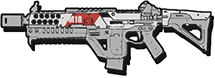
R-97 (my beloved)
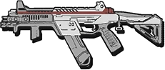
Le R-97 est une mitraillette compacte qui excelle dans le combat rapproché grâce à sa cadence de tir élevée et à la taille de son chargeur. Il possède la cadence de tir la plus rapide de toutes les armes principales, ce qui, combiné à la grande taille de son chargeur, le rend parfait pour éliminer des escouades entières dans des espaces confinés. Malgré cela, ses dégâts par tir sont très faibles, nécessitant 5 à 6 balles pour abattre un Pilote. Sa portée effective très courte et son recul élevé le rendent peu adapté au combat au-delà des plus courtes distances, bien que le tir en rafale puisse améliorer sa précision.
Mitrailleuse légère
spitfire
Le Spitfire LMG a un recul important au début, mais celui-ci finit par se stabiliser en un motif de tir plus resserré. En raison de son recul particulier, il est conseillé d'ignorer la méthode traditionnelle de tir par courtes rafales et plutôt de tirer par longues rafales pour une efficacité accrue. Il offre des dégâts extrêmement élevés pour une arme qui n'est pas de longue portée, abattant un pilote en 3 coups maximum ou 2 tirs à la tête. C'est l'une des armes les plus utiles pour attaquer un Titan en rodéo, car elle nécessite moins d'une bande de munitions pour le détruire complètement.
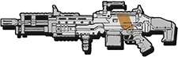
L-Star
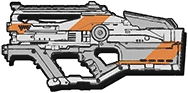
Le L-STAR est une mitrailleuse légère à énergie et à accélération de particules, à tir rapide. Elle tire des projectiles de particules rouges à vitesse modérée sur la cible. Les cibles touchées par l'arme verront une énergie rouge tourbillonner autour d'elles pendant quelques instants, et si elles sont tuées, leur corps explosera comme si elles avaient été touchées par un explosif. Elle offre 45 en dégâts et 34 en précision. La taille de son chargeur correspond au nombre de tirs que l'arme peut enchaîner avant de surchauffer complètement, déclenchant alors une animation de rechargement où le récepteur supérieur s'ouvre pendant que le pilote dissipe la chaleur, avant de remplacer plusieurs pièces dans la crosse et le canon, probablement un composant fondu et une batterie.
X-55 Dévotion
La Dévotion a probablement été fabriquée par Wonyeon Defense, car elle présente un design similaire à la deuxième version du Hemlok BF-R conçue par cette entreprise après la bataille de Deméter. Elle était plutôt unique pour son époque, étant la première arme de pilote à utiliser un mécanisme d'augmentation progressive de la cadence de tir. Sa cadence de tir rapide en a fait une option populaire auprès des pilotes cherchant une alternative au Spitfire, capable de déchiqueter les cibles presque instantanément, ce qui en a fait une arme utilisée pendant la Guerre de la Frontière.
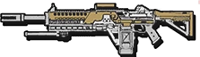
fusils de précision
Kraber-AP
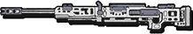
Le Kraber est une arme exceptionnellement encombrante et se manie comme telle, avec une maniabilité lente et de longs temps de rechargement. Il possède cependant une puissance immense, capable de tuer instantanément n'importe quel ennemi de taille humaine. Les balles tirées par cette arme ont une trajectoire courbe et un temps de vol conséquents, dont il faut tenir compte au-delà des engagements à courte distance. Manier efficacement un Kraber demande un véritable savoir-faire, une qualité qui rend ce fusil si attachant pour de nombreux joueurs.
D-2 à double tir
Le Double Take est un fusil de précision à double canon. Les tirs sont effectués côte à côte, et le viseur par défaut comporte deux chevrons indiquant l'endroit où les tirs vont atterrir. Cela le distingue du Longbow et du Kraber, qui ne sont pas équipés de hausses. Il possède également un chargeur de type bullpup à l'arrière de l'arme.
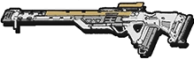
fusils de précision
Kraber-AP
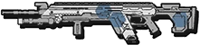
Le D-101 Longbow-DMR (Designated Marksman Rifle), aussi appelé simplement Longbow-DMR, Longbow ou DMR, est un fusil de précision semi-automatique pour Pilote fabriqué par Lastimosa Armory, présent dans Titanfall, Titanfall 2 et Apex Legends. Le Longbow est une variante du fusil d'assaut R-201, modifiée pour remplir un rôle de fusil de précision.
Fusils à pompe
EVA-8 Auto
Cette arme a été entièrement développée par Wonyeon Interstellar pour fournir aux groupes de raid de la Garde Orbitale de l'IMC (surnommés Shipwreckers) une puissance de feu dévastatrice en combat rapproché. L'EVA-8 a également été largement utilisée par la Milice de la Frontière et les Pirates des Terres Désolées, qui s'en procuraient souvent en pillant des convois de ravitaillement isolés à destination des Colonies Extérieures. Lorsqu'une puissance de feu massive est nécessaire lors d'un premier contact, les Pilotes n'ont pas besoin de chercher plus loin que l'EVA-8. Le fusil à pompe EVA-8 est une arme à rechargement automatique qui inflige d'importants dégâts à courte distance. Il possède une dispersion de plombs en forme de « 8 », d'où son nom « EVA-8 ».
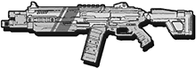
Mastiff
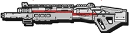
Le Mastiff peut être considéré comme facile à utiliser, mais difficile à maîtriser. D'un côté, il présente plusieurs caractéristiques remarquables, comme une faible perte de dégâts avec la distance, une portée et des dégâts élevés, et (peut-être sa particularité la plus notable) une dispersion totalement plate. D'un autre côté, il n'est pas sans défauts : un léger mais perceptible temps de trajet des projectiles, un chargeur limité à quatre cartouches, et un délai entre les tirs pour compenser un recul élevé. Il est possible de manquer des tirs même à courte portée en oubliant de tenir compte du temps de trajet.
Grenadier
Sideweinder SMR
Le Sidewinder est une arme anti-Titan qui permet aux Pilotes d'endommager facilement les Titans ennemis. Les micro-missiles infligent des dégâts limités, mais peuvent causer des dégâts critiques en touchant des points vulnérables. Il possède une cadence de tir assez élevée et une grande capacité de chargeur. Il est déconseillé de l'utiliser lors d'une attaque en rodéo contre un Titan, car les missiles explosent à l'impact, tuant le pilote. Il est surtout efficace à courte portée, où il peut toucher des points vulnérables et infliger des dégâts critiques. Il est moins efficace à moyenne portée, où il peut tout juste toucher un ennemi. À longue distance, d'autres armes anti-Titan sont préférables.
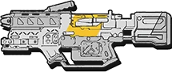
EPG-1
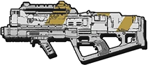
Le Mastiff peut être considéré comme facile à utiliser, mais difficile à maîtriser. D'un côté, il présente plusieurs caractéristiques remarquables, comme une faible perte de dégâts avec la distance, une portée et des dégâts élevés, et (peut-être sa particularité la plus notable) une dispersion totalement plate. D'un autre côté, il n'est pas sans défauts : un léger mais perceptible temps de trajet des projectiles, un chargeur limité à quatre cartouches, et un délai entre les tirs pour compenser un recul élevé. Il est possible de manquer des tirs même à courte portée en oubliant de tenir compte du temps de trajet.
R-6P Softball
Le lance-grenades anti-Titan (AAGL) R-6P Softball est un lance-grenades à barillet, manié par les Pilotes contre les Titans. Il est léger et facile à ranger, ce qui permet à son utilisateur de tirer et de manœuvrer rapidement. L'arme peut tirer plusieurs types de munitions telles que HE, EMP, fumigène, traceur et charges à haute densité - bien que seules les grenades collantes soient utilisables en jeu. Elle peut être utilisée en tir direct ou indirect, permettant des schémas de tir variés et des attaques combinées. Robuste, fiable et à la conception simple, l'AAGL Softball est une arme anti-Titan très efficace. Les munitions du Softball peuvent se coller aux cibles et aux surfaces, et explosent peu après l'impact.
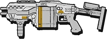
Mitrailleuse EM-4 CW
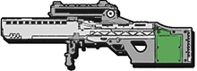
L'EM-4 Cold War, ou simplement Cold War, est un lance-grenades principal bullpup à rafale de quatre coups, fabriqué par Vinson Dynamics et tirant des munitions explosives de 4,73x33 mm. L'arme doit être chargée avant de tirer, mais contrairement au Charge Rifle, il suffit d'appuyer sur la détente pour lancer la charge, suivie automatiquement du tir, au lieu de devoir maintenir la détente enfoncée pour tirer.
Pistolets
Wingman Elite
Le Wingman Elite inflige plus de dégâts que le Wingman classique, mais cela est en partie compensé par le fait qu'il n'est pas à tir instantané, obligeant les joueurs à anticiper légèrement leur cible. Il est ainsi capable de tuer un Pilote ennemi en un seul coup, à condition que ce soit un tir à la tête.
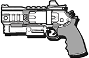
SA-3 Mozambique
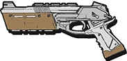
Le SA-3 Mozambique est un pistolet à trois canons tirant trois cartouches simultanément à chaque pression sur la détente, ce qui lui confère des dégâts élevés à courte portée. Sa précision et sa portée restent toutefois limitées, ce qui le rend surtout adapté aux engagements rapprochés plutôt qu'aux échanges de tirs prolongés.
Smart Pistol
En tant que Boost, le Smart Pistol est un bonus à usage unique qui peut être activé lorsque la jauge de Titan du joueur atteint 60 %. Contrairement à toutes les autres armes (à l'exception des armes secondaires anti-Titan), le Smart Pistol ne dispose que d'un seul chargeur de réserve, pour un total de 24 munitions. La vitesse de verrouillage dépend désormais à la fois de la distance à la cible et de la distance entre la cible et le centre du réticule de verrouillage. Le Smart Pistol avertit désormais la cible qu'elle est en train d'être verrouillée, ce qui facilite son évasion.
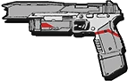
Armes secondaire et anti titan
RE-45 Auto
Le RE-45 Autopistol est un pistolet de calibre .45 destiné à une utilisation à courte portée. Il perd en dégâts et en précision sur de longues distances, ce qui le rend moins adapté aux portées moyennes à longues que le Hammond P2011 ou le B3 Wingman. Cependant, cette arme est particulièrement efficace lorsqu'on surprend des joueurs sans méfiance grâce à l'utilisation de la Cape d'Invisibilité, puisqu'elle conserve des dégâts maximaux à courte portée ; il faut simplement s'assurer que la victime ne se retourne pas.
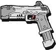
Gammond P2016
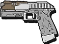
Le Hammond P2016, ou simplement P2016, est une arme de poing fabriquée par Lastimosa Armory et présente dans Titanfall 2. Il s'agit essentiellement d'une version améliorée du Hammond P2011 de Titanfall. Comme son prédécesseur, le P2016 est un pistolet semi-automatique avec un chargeur de 12 cartouches. Contrairement à son prédécesseur, cependant, il peut être modifié de la même manière qu'une arme principale, avec plusieurs accessoires et camouflages à la disposition de l'utilisateur. Ainsi, l'arme peut recevoir un chargeur étendu portant sa capacité à 16 cartouches.
Wingman
Le B3 Wingman ne nécessite que deux tirs au corps ou un seul à la tête pour tuer un Pilote ennemi. Les autres armes de poing nécessitent au moins quatre tirs au corps ou trois à la tête. Si vous parvenez à devenir précis avec cette arme, c'est une arme de poing redoutable. Utilisez-la uniquement si votre arme principale est presque ou complètement à court de munitions. C'est une excellente arme pour prendre un Pilote au dépourvu en combat rapproché.
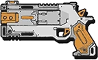
Armes anti titan
Fusil à charge
Le Charge Rifle a été conçu par Wonyeon Defense comme une arme destinée à combattre les Titans. Capable d'atteindre les Titans à distance grâce à son tir instantané et d'infliger d'importants dégâts une fois chargé, quelle que soit la portée, il est rapidement devenu indispensable pour les factions engagées dans la Guerre de la Frontière.
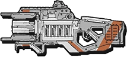
Lanceur magnétique LGM
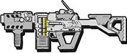
Le MGL (Lanceur Magnétique de Grenades) est une arme anti-Titan tirant une rafale de grenades magnétiques qui se propulsent et explosent au contact d'une cible ou d'une surface. Sa capacité à tirer plusieurs projectiles rapidement en fait une arme redoutable pour infliger des dégâts importants en peu de temps, bien que sa précision et sa portée restent modestes.
Thunderbolt LG-97
Le LG-97 Thunderbolt est un projecteur d'énergie anti-Titan qui tire une grosse boule d'électricité se déplaçant lentement et infligeant des dégâts à toute unité se trouvant dans un large rayon autour de sa trajectoire de vol. En touchant une cible, elle explose en une déflagration sphérique, pouvant blesser le pilote s'il tire accidentellement à bout portant. Les cibles touchées par le Thunderbolt subissent une perturbation de leur vision similaire à celle causée par une Grenade à Arc ou par le Siphon d'Énergie de Monarch, bien que l'effet soit très éphémère.
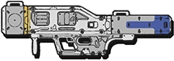
Archer
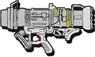
L'Archer, un lance-roquettes lourd, est une arme polyvalente utilisée par l'infanterie sur la Frontière. Elle dispose de plusieurs modes de tir principaux - le principal exigeant que l'utilisateur obtienne un verrouillage unique, avant de tirer un missile autoguidé qui poursuivra ensuite automatiquement la cible verrouillée. Cependant, le lance-roquettes prend également en charge un mode de tir libre (tirer le missile sans nécessiter de verrouillage) et un mode de tir en mortier, pour une plus grande polyvalence sur le terrain.